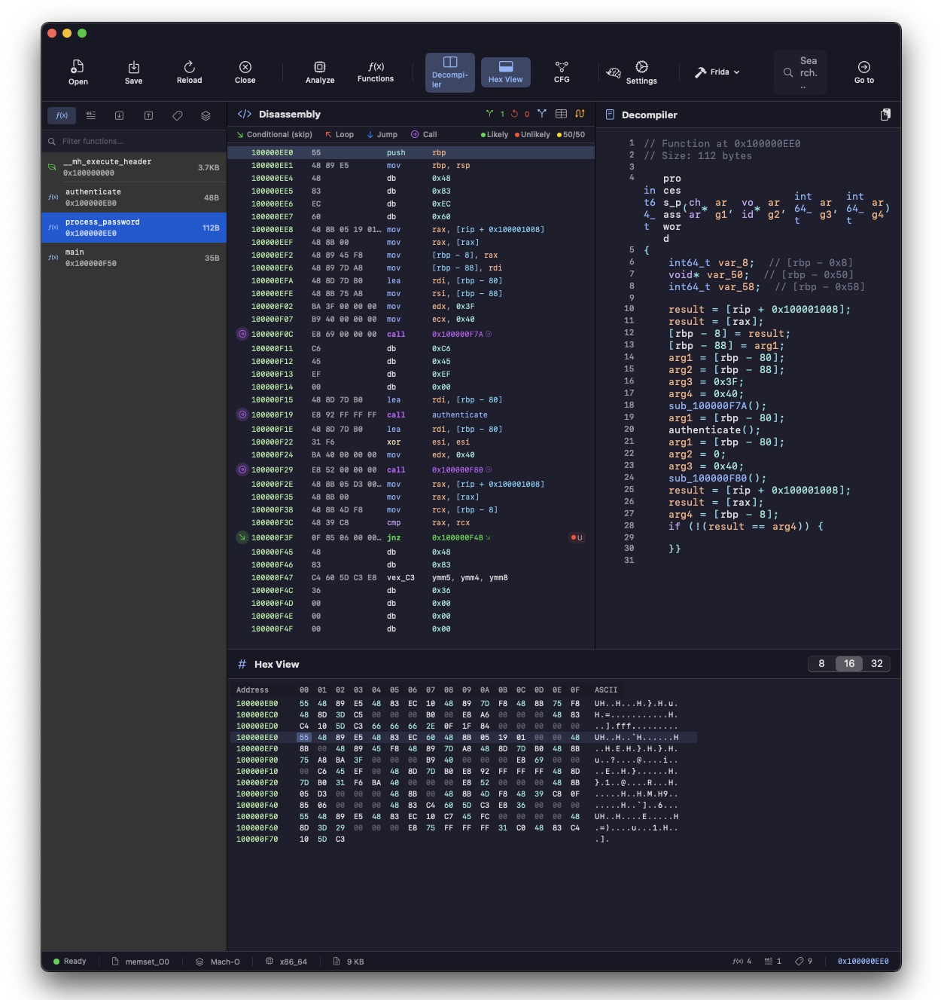
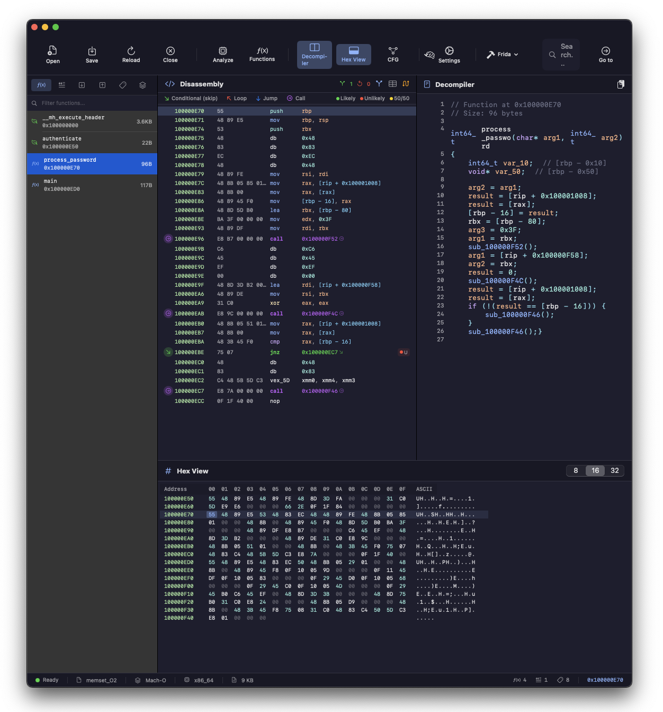
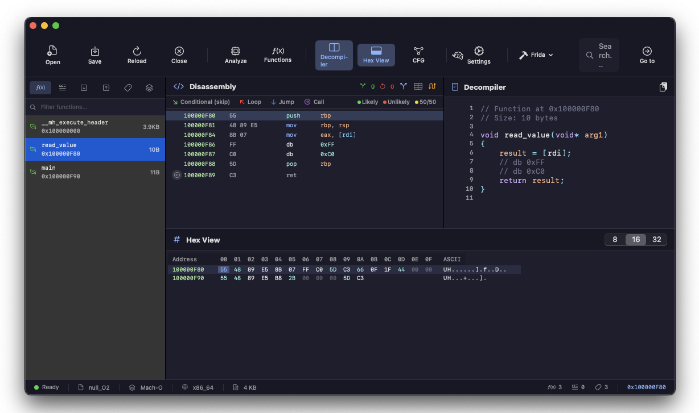
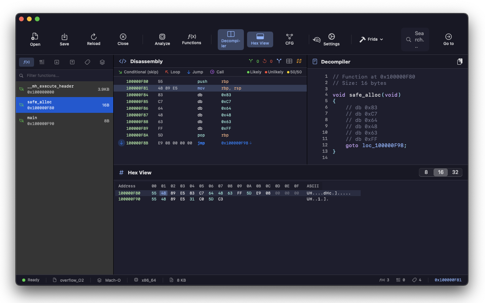
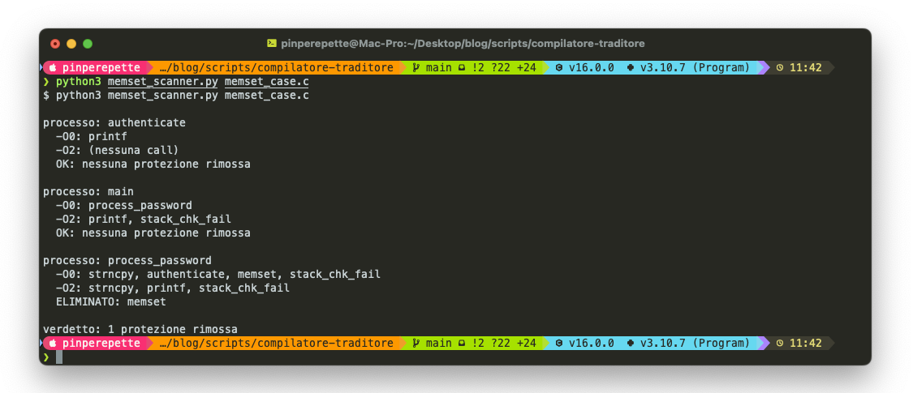

// Il Tradimento
Sezione 00. L'antefatto
Sto riscrivendo un modulo di autenticazione. La password arriva in chiaro via TLS, la copio in un buffer locale, la valido, la confronto con l'hash nel database, poi faccio memset(buf, 0, len) per pulire la RAM. Roba standard. Il buffer e' azzerato, la password non resta in memoria. Vado a dormire tranquillo.
Poi un giorno mi viene la curiosita'. Compilo con -O2 e apro il disassembly con objdump. Cerco la mia chiamata a memset. Non c'e'. Cerco meglio. Non c'e'. Sparita. Il binario fa il setup dello stack, chiama authenticate, e poi dritto al ret. La password resta in memoria finche' qualcos'altro la sovrascrive. Potrebbe essere un millisecondo, potrebbe essere un'ora.
La iena si affaccia: "Tutto bene? Hai la faccia di uno che ha visto un fantasma." "Quasi. Ho scoperto che il compilatore mi frega di nascosto."
E no, non e' un bug. Il compilatore ha applicato una regola perfettamente legittima: se una variabile non viene letta dopo una scrittura, quella scrittura e' inutile. Si chiama dead store elimination. Il tuo memset scrive su un buffer che nessuno leggera' piu'. Per il compilatore e' come passare lo straccio in una stanza che stai per demolire. Perche' perdere cicli?
E questo e' solo l'inizio. Il compilatore elimina anche null check, rimuove controlli di overflow e riordina le istruzioni. Tutto legale secondo lo standard. Tutto devastante per la sicurezza. E zero warning. Il codice compila, linka, gira. Solo che non fa quello che pensi.
// La Password Fantasma
Sezione 01. Dead store elimination
Partiamo dal caso classico. Funzione che riceve una password, la usa, poi la cancella dalla RAM con memset. Lo fanno tutti, lo dicono tutti i manuali.
| 1 | #include <string.h> |
| 2 | |
| 3 | void authenticate(const char *pw); |
| 4 | |
| 5 | void process_password(const char *input) { |
| 6 | char password[64]; |
| 7 | strncpy(password, input, 63); |
| 8 | password[63] = '\0'; |
| 9 | |
| 10 | authenticate(password); |
| 11 | |
| 12 | // Pulisci la password dalla RAM |
| 13 | memset(password, 0, 64); |
| 14 | } |
Compili con clang -O0, guardi il disassembly, memset c'e'. Perfetto, il buffer viene azzerato. Tutto regolare.

Ora compili con clang -O2. Stessa funzione, stesso sorgente. Riapri il disassembly.

Puf. memset non esiste piu'. Il compilatore l'ha segata. Il ragionamento e' freddo e logico: password e' un array locale sullo stack. Dopo memset, la funzione ritorna e lo stack frame viene distrutto. Nessuno leggera' mai quei 64 byte azzerati. Scrivere zero in un buffer che nessuno leggera'? Operazione inutile. Dead store. Via.
Il problema e' che la password resta li sullo stack. In chiaro. Finche' un'altra funzione non alloca quello stesso spazio e lo sovrascrive, quei byte sono li ad aspettare. Un attaccante con accesso alla memoria del processo (core dump, /proc/<pid>/mem, cold boot attack, un exploit di un altro bug qualsiasi) la trova intatta. Grazie compilatore.
Le soluzioni esistono. memset_s (C11 Annex K) e' garantito non eliminabile dallo standard. explicit_bzero (BSD/Linux) e' una funzione opaca che il compilatore non puo' ottimizzare via. Su Windows c'e' SecureZeroMemory. L'alternativa portable e' un barrier con volatile: scrivi tramite un puntatore volatile e il compilatore non puo' eliminare la scrittura. Ma la soluzione vera e' sapere che il problema esiste.
// Il Null Check che Non Esiste
Sezione 02. Undefined behavior e le sue conseguenzeSecondo caso, e qui il compilatore diventa proprio stronzo. Scrivi una funzione che legge un valore da un puntatore, poi controlla se il puntatore e' NULL. Sembra ragionevole. Lo trovi in mille codebase.
| 1 | int read_value(int *ptr) { |
| 2 | int val = *ptr; // dereferenzia ptr |
| 3 | if (ptr == NULL) // controlla se e' NULL |
| 4 | return -1; // gestione errore |
| 5 | return val + 1; |
| 6 | } |
Per un umano quel check e' una rete di sicurezza. Per il compilatore e' un puzzle logico. Riga 2: *ptr dereferenzia il puntatore. Se ptr fosse NULL, sarebbe undefined behavior. Lo standard C dice che il compilatore puo' assumere che l'UB non accada mai. Quindi se la riga 2 viene eseguita, ptr non puo' essere NULL. Quindi il check alla riga 3 e' sempre falso. Quindi il compilatore lo elimina. Sillogismo perfetto, conseguenza devastante.

Tre istruzioni. Leggi, aggiungi 1, ritorna. Il null check non esiste nel binario. Il return -1 non esiste nel binario. Chiami read_value(NULL) e il programma crasha. Proprio la cosa che il check doveva impedire.
"Ma io l'ho scritto il check!" Si', nel sorgente. Il binario pero' non e' il sorgente. Il binario e' quello che il compilatore decide di produrre. E le regole dicono: UB non accade, il check e' inutile, lo tolgo. Fine della discussione.
Cos'e' l'undefined behavior? E' il contratto tra te e il compilatore. Lo standard C dice: se fai certe cose (dereferenziare NULL, overflow di interi con segno, accedere fuori dai limiti di un array), il comportamento e' indefinito. Il compilatore puo' fare qualsiasi cosa: crashare, ignorare, formattarti il disco. In pratica usa l'UB come informazione: se un'operazione e' UB, il codice che la presuppone non puo' essere raggiunto. E lo elimina. Bello eh?
La fix e' banale: controlla prima, dereferenzia dopo. if (ptr == NULL) return -1; int val = *ptr; In questo ordine il compilatore non ha scuse. Ma devi saperlo. E lui non te lo dice.
// L'Overflow Invisibile
Sezione 03. Signed overflow e la trappola del check
Terzo caso, e ormai dovresti avere il sospetto che finira' male. Devi allocare un buffer con un margine di sicurezza. Controlli l'overflow prima di chiamare malloc.
| 1 | #include <stdlib.h> |
| 2 | |
| 3 | void *safe_alloc(int size) { |
| 4 | if (size + 100 < size) // overflow? |
| 5 | abort(); // errore: overflow |
| 6 | return malloc(size + 100); |
| 7 | } |
L'idea: se size e' vicino a INT_MAX, size + 100 wrappa a un numero negativo, il check lo becca e chiama abort(). Sembra solido.
Peccato che size e' int, cioe' signed. In C, l'overflow di un intero con segno e' undefined behavior. Il compilatore assume che UB non accada mai. Quindi size + 100 non puo' essere minore di size. Quindi il check e' sempre falso. Via il check, via abort(). In una riga ha disattivato la tua difesa.

Il binario fa tre cose: add 100, estendi a 64 bit, jmp malloc. Basta. Se size vale INT_MAX, il risultato wrappa e malloc alloca un buffer minuscolo. Scrivi oltre i limiti. Buffer overflow. Il check difensivo non ha fermato un bel niente.
Ricapitoliamo. Quello che scrivi nel sorgente contro quello che trovi nel binario.
| Cosa scrivi | Cosa produce il compilatore | Perche' |
|---|---|---|
memset(buf, 0, len) | Niente | Dead store elimination |
if (ptr == NULL) | Niente | UB: ptr gia' dereferenziato |
if (size + 100 < size) | Niente | UB: signed overflow |
Tre protezioni scritte nel sorgente. Zero nel binario. Zero warning. Complimenti.
// Il Riordino
Sezione 04. Instruction reordering e timing attacksIl compilatore non si limita a cancellare roba. Riordina le istruzioni per sfruttare la pipeline della CPU. Due operazioni sequenziali nel sorgente possono invertirsi nel binario. Di solito non importa. Ma quando fai sicurezza, l'ordine conta eccome.
Caso concreto: server HTTPS, devi confrontare l'HMAC del client con quello del server. Se usi memcmp, hai un problema.
| 1 | // SBAGLIATO: memcmp esce al primo byte diverso |
| 2 | if (memcmp(received_hmac, computed_hmac, 32) == 0) { |
| 3 | accept_request(); |
| 4 | } |
memcmp confronta byte per byte e ritorna appena trova una differenza. Primo byte sbagliato? Torna in 2 nanosecondi. Primi 31 giusti e solo l'ultimo sbagliato? Ci mette di piu'. Un attaccante misura il tempo e deduce quanti byte sono corretti. Prova tutti i valori del primo byte, trova quello che allunga la risposta. Ripete per il secondo. 256 × 32 = 8192 tentativi e ha l'intero HMAC. Si chiama timing attack e funziona da dio.
La soluzione standard e' un confronto constant-time: confronti tutti i byte, accumuli le differenze con OR, e ritorni solo alla fine. Nessun early exit, stesso tempo sia che sbagli tutto sia che indovini quasi tutto.
| 1 | // Confronto constant-time |
| 2 | int secure_compare(const unsigned char *a, |
| 3 | const unsigned char *b, |
| 4 | size_t len) { |
| 5 | unsigned int result = 0; |
| 6 | for (size_t i = 0; i < len; i++) { |
| 7 | result |= a[i] ^ b[i]; |
| 8 | } |
| 9 | return result; |
| 10 | } |
Indovina. Il compilatore con -O2 puo' autovettorizzare questo loop con istruzioni SIMD, processando 16 o 32 byte alla volta. Su hardware moderno la versione vettorizzata e' quasi sempre constant-time. Ma "quasi" in crittografia non vale niente. Su certe microarchitetture le SIMD hanno timing variabile. Il compilatore non sa cos'e' un side channel. Lui ottimizza per la velocita', non per la tua paranoia.
Il riordino colpisce anche la pulizia dei segreti. Pulisci un buffer e poi lo liberi? Il compilatore puo' spostare il free prima del memset perche' non vede dipendenza. Oppure eliminare la pulizia del tutto, tanto la memoria sta per essere liberata. In entrambi i casi: il segreto resta in memoria.
Non e' solo colpa del compilatore. Anche la CPU riordina le istruzioni a runtime (out-of-order execution). In un sistema multi-thread, un thread puo' vedere le scritture di un altro in ordine diverso. Per questo esistono i memory barriers: __asm__ __volatile__("" ::: "memory") dice al compilatore "non spostare niente oltre questo punto" e alla CPU "completa tutte le scritture prima di andare avanti".
// Come Sopravvivere
Sezione 05. Le difese realiOk, il compilatore fa il suo lavoro. Non e' cattivo, e' che ragiona secondo lo standard e lo standard se ne frega della tua sicurezza. Il vero problema e' che scrivi C pensando che le istruzioni vengano eseguite come le hai scritte. Non funziona cosi'. Ma le difese ci sono.
| Problema | Soluzione |
|---|---|
memset eliminato |
memset_s (C11), explicit_bzero (BSD/Linux), SecureZeroMemory (Windows), barrier con volatile |
| Null check eliminato | Controllare prima di dereferenziare. Mai *ptr prima di if (ptr == NULL) |
| Overflow check eliminato | __builtin_add_overflow (GCC/Clang), aritmetica unsigned, safe integer libraries |
| Riordino istruzioni | volatile, memory barriers, __asm__ __volatile__("" ::: "memory") |
| Timing attacks | CRYPTO_memcmp (OpenSSL), timingsafe_bcmp (BSD), funzioni di libreria crittografica |
E poi le difese generali. -fno-strict-overflow dice al compilatore di non sfruttare l'UB di signed overflow. -fsanitize=undefined aggiunge check runtime che trappolano l'UB quando accade. Ma la vera difesa e' una sola: leggere il disassembly. objdump -d e' il test finale. Se la tua protezione non c'e' nel binario, non esiste. Punto.
| 1 | # Compila con protezioni anti-UB |
| 2 | clang -O2 -fno-strict-overflow -fsanitize=undefined -o safe auth.c |
| 3 | |
| 4 | # Verifica che le protezioni siano nel binario |
| 5 | objdump -d safe | grep memset |
| 6 | |
| 7 | # Con explicit_bzero, la pulizia non viene eliminata |
| 8 | objdump -d safe | grep explicit_bzero |
Regola d'oro: non fidarti del sorgente. Fidati del binario. Il sorgente e' quello che volevi fare. Il binario e' quello che succede davvero.
// I Danni Veri
Sezione 06. CVE reali, non esercizi accademici"Si' ok, bel disassembly, ma nella pratica succede davvero?" Eccome. Memoria non azzerata che contiene segreti e' la causa di CVE con exploit pubblici e danni reali in produzione. Non nel 2011. Adesso.
MongoBleed — CVE-2025-14847
Dicembre 2025. Mandi un messaggio zlib malformato a MongoDB e il server ti restituisce pezzi di heap non inizializzata. Dentro: credenziali, token di sessione, PII dai documenti BSON. Il bug e' nella decompressione: riporta una dimensione sbagliata, il server copia piu' byte di quanti ne abbia scritti, e quei byte extra sono heap riciclata dalle operazioni precedenti.
PoC pubblico dal 26 dicembre. Exploitation in-the-wild dal 29. Censys conta 87.000 istanze MongoDB esposte su Internet. Heartbleed versione 2025: stessa meccanica, stesso impatto, dieci anni dopo. Non abbiamo imparato niente.
rsync — CVE-2024-12085 + CVE-2024-12084
Gennaio 2025. I ricercatori di Google scoprono che rsync leaka un byte alla volta di stack non inizializzato durante il confronto dei checksum. Il parametro s2length non viene validato: lo manipoli e forzi un confronto tra un checksum e memoria non inizializzata. Un byte per richiesta. Lento, ma deterministico.
Il leak da solo (CVE-2024-12085) sarebbe roba minore. Ma quelli di Google lo concatenano con un buffer overflow separato (CVE-2024-12084): usano i byte leakati per calcolare gli offset e triggerare l'overflow in modo affidabile. Risultato: RCE come guest anonimo su qualsiasi server rsync. E la cosa bella? L'intera catena si spezza compilando con un singolo flag: -ftrivial-auto-var-init=zero. Inizializza a zero tutte le variabili locali. Senza il flag, lo stack e' pieno di residui. Con il flag, il leak non produce niente di utile e la catena si rompe.
Il parallelo con memset. -ftrivial-auto-var-init=zero risolve il problema al contrario: invece di cancellare la memoria dopo l'uso (memset, che il compilatore puo' eliminare), la inizializza prima dell'uso (che il compilatore non puo' eliminare perche' il valore zero potrebbe essere letto). Stessa difesa, approccio opposto, a prova di ottimizzazione.
KeePass — CVE-2023-32784
Maggio 2023. La master password di KeePass 2.x resta in chiaro nella memoria del processo. Il campo di input usa un text box custom (SecureTextBoxEx) che per ogni carattere digitato crea una stringa residua. Digiti "Password" e in RAM restano: *a, **s, ***s, ****w, *****o, ******r, *******d. Ricostruire la password e' un esercizio per principianti.
Il motivo: .NET gestisce le stringhe come oggetti immutabili. Create, non puoi sovrascriverle. memset su una stringa .NET non ha senso: il garbage collector puo' spostarla e lasciare copie al vecchio indirizzo. La password e' recuperabile da un dump del processo, dal pagefile, dall'hiberfil.sys, o da un dump della RAM. Non servono nemmeno privilegi elevati: basta un malware che chiama MiniDumpWriteDump e hai la master password del password manager. Ironia livello Dio.
| CVE | Dove | Cosa leaka | Come |
|---|---|---|---|
| CVE-2025-14847 | MongoDB | Credenziali, token, PII | Heap non inizializzata via zlib |
| CVE-2024-12085 | rsync | Stack residuo (1 byte/req) | Checksum length non validato |
| CVE-2023-32784 | KeePass 2.x | Master password | Stringhe .NET immutabili in RAM |
Lo schema e' sempre quello. Un buffer contiene un segreto. Il codice prova a cancellarlo. Qualcosa impedisce la cancellazione: il compilatore che elimina memset, il runtime che non permette di sovrascrivere le stringhe, una variabile locale mai inizializzata. Poi arriva un altro bug (over-read, dump, leak) e quel buffer viene esposto. Il segreto esce. Ogni. Singola. Volta.
// Lo Scanner
Sezione 07. Rilevare le protezioni eliminate
Leggere il disassembly a mano va bene per un file. Ma su un progetto con centinaia di sorgenti non ti metti li' con objdump e una birra. Serve automazione. Questo script Python compila un sorgente con -O0 e -O2, estrae le call da ogni funzione, e confronta. Se una call di sicurezza sparisce con -O2, te lo dice.
| 1 | SECURITY_CALLS = {'memset', 'explicit_bzero', 'memset_s', |
| 2 | 'abort', 'exit', '__stack_chk_fail'} |
| 3 | |
| 4 | def compile_and_disasm(source, opt_level): |
| 5 | obj = tempfile.mktemp(suffix='.o') |
| 6 | subprocess.run(['clang', opt_level, '-c', '-o', obj, source]) |
| 7 | return subprocess.check_output(['objdump', '-d', '-r', obj]) |
| 8 | |
| 9 | def extract_functions(disasm): |
| 10 | functions, current_fn, calls, saw_call = {}, None, [], False |
| 11 | for line in disasm.splitlines(): |
| 12 | fn = re.match(r'^[0-9a-f]+ <_?(\w+)>:', line) |
| 13 | if fn: |
| 14 | if current_fn: functions[current_fn] = calls |
| 15 | current_fn, calls, saw_call = fn.group(1), [], False |
| 16 | elif saw_call: |
| 17 | reloc = re.search(r'RELOC_BRANCH\s+_*(\w+)', line) |
| 18 | if reloc: |
| 19 | callee = re.sub(r'_chk$', '', reloc.group(1)) |
| 20 | if callee not in calls: calls.append(callee) |
| 21 | saw_call = False |
| 22 | elif re.search(r'\bcallq?\s+', line): |
| 23 | saw_call = True |
| 24 | return functions |
Compila con entrambi i flag, fa objdump -d -r sui due object file (il -r serve per le relocation entries, cioe' i nomi veri delle funzioni chiamate), e per ogni funzione confronta le call. Se qualcosa del set SECURITY_CALLS c'e' con -O0 ma non con -O2, lo segnala. Semplice e brutale.

L'output e' diretto: per ogni funzione, le call con -O0, le call con -O2, e cosa e' sparito. Zero disassembly da leggere a mano. Lo scanner fa il lavoro sporco al posto tuo.
Estendibile. SECURITY_CALLS e' un set. Ci butti dentro quello che vuoi: OPENSSL_cleanse, sodium_memzero, i tuoi wrapper custom. Lo scanner le traccia tutte. Mettilo nella CI e dormi piu' tranquillo.
Il compilatore non e' cattivo. Fa il suo lavoro: produrre il binario piu' veloce possibile secondo lo standard. Il problema sei tu che pensi in operazioni sequenziali mentre lui pensa in regole formali. E le regole dicono che il tuo memset e' un dead store, il tuo null check e' ridondante, e il tuo overflow check e' impossibile. Tutto legale. Tutto silenzioso. Tutto nel tuo binario di produzione adesso.
Signal Pirate